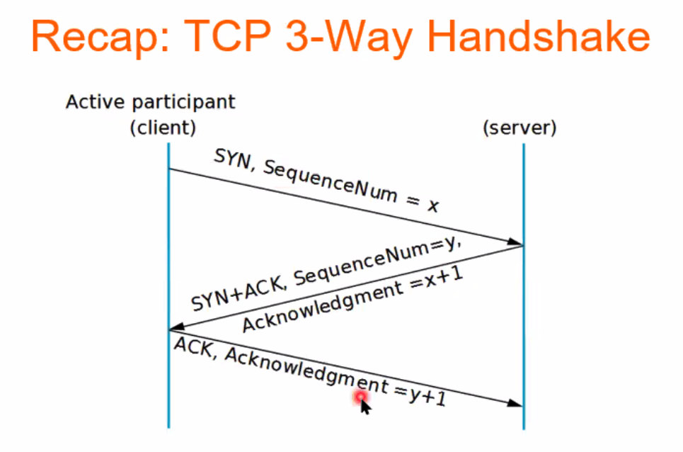
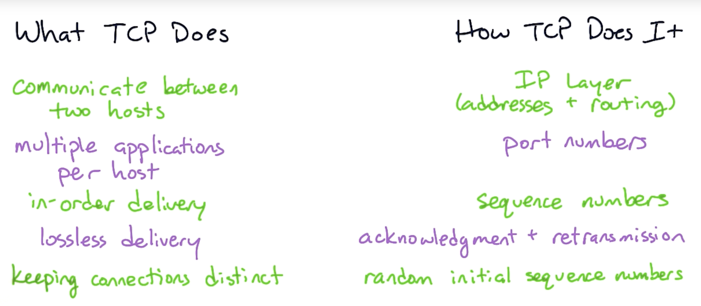

TCP
Transport Control Protocol
TCP is a connection-oriented protocol. It is full-duplex (both hosts on a TCP connection can send messages to each other simultaneously).
Analogy
-
What if you can’t understand
what your friend is saying?
- Should you ask them to repeat what they said?
-
What if you haven’t heard them speak for a while?
- Does your friend simply not have anything to say?
- Has the phone lost reception and disconnected?
- Should you keep talking? If so, for how long?
- Should both you and your friend periodically say “mhmm” to indicate that you are present and listening?
TCP handshake (three-way)
- Client sends a TCP segment with SYN flag & …
- Server replies a TCP segment with SYN and ACK flag & …
- Client sends an ACK flag & …
How it works
Ensures that messages are always (i) delivered (ii) in the correct order. TCP: ensures data reaches the intended destination and data is not corrupted.
- Accept data from a data stream
- Divide into segments
- Identify and retransmit messages accordingly
- Reassemble messages if out of order
Multiplexing and demultiplexing

TCP packet
Consists of:
- Ethernet or wifi header
- IP header
- TCP header
- Source port number
- Destination port number
- Sequence number
- Acknowledgement number
- Header length
- …
- Flag
- synchronise
- finish
- push
- reset
- acknowledge
- urgent
- Window size
- Checksum
- Urgent pointer
- …
- Data (payload)

Control measures
- Congestion Control
- TCP start sending data slowly and increase only when the other end can keep up.
- TCP drops data when the other cannot keep up
- Flow control
- Congestion control
Applications using TCP
- Web browsing (HTTP, HTTPS)
- FTP
- SSH
- Email (SMTP, IMAP, POP)
- On-demand movie streaming
TCP 3-way handshake
Destination address is in IPv4